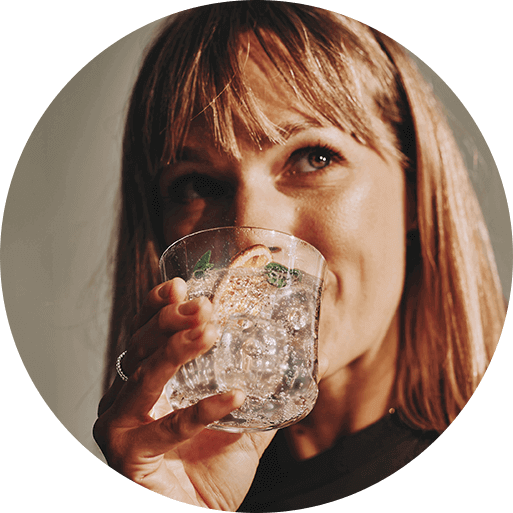

Butelka
BUTELKI FUSE LITTLE
HEROES 0,5 L
NIEBIESKA
I KORALOWA, 2-PAK
WODA GAZOWANA
GOTOWA W KILKA SEKUND
Spraw, aby picie wody stało się dla Twojego dziecka ekscytującą przygodą! Nowe wielorazowe butelki Fuse Little Heroes z uroczymi zwierzątkami nie tylko zachęcają do częstszego sięgania po wodę, ale także pozwalają Twojemu dziecku nauczyć się eko nawyków oraz dbania o naszą planetę.
MAŁE KROKI, WIELKIE ZMIANY

Każdy, nawet najmniejszy krok w stronę bardziej zrównoważonego stylu
życia jest ważny. Dołącz do grona użytkowników SodaStream i pokaż
swojemu dziecku, jak łatwo można dbać o Ziemię, wybierając wielorazowe
butelki, takie jak Fuse Little Heroes.
Dzięki użytkownikom SodaStream, w ubiegłym roku udało się
wyeliminować
aż 5 000 000 000 jednorazowych butelek!
Dając dobry przykład innym, inspirujesz ich do podobnych działań.
Pamiętaj, że razem możemy osiągnąć znacznie więcej, dbając o naszą
planetę dla przyszłych pokoleń.
IDEALNA DLA MAŁEGO ODKRYWCY
idealne dla dzieci. Są lekkie, poręczne i łatwo mieszczą się w
plecaku. Niezależnie od tego, czy Twoja pociecha wybiera się na
plac zabaw, do szkoły, czy na wycieczkę, zawsze może mieć pod
ręką swój ulubiony napój.
JAK POWSTAJĄ BĄBELKI?
1
Napełnij butelkę Fuse
Little Heroes zimną wodą
z kranu
lub filtrowaną.
2
Zamontuj butelkę w saturatorze zgodnie z instrukcją.
3
Naciśnij przycisk lub
dźwignię urządzenia, by uwolnić
bąbelki.
Linia My Only Bottle Little Heroes to ukłon w stronę najmłodszych eko bohaterów. W zestawie znajdziesz dwie półlitrowe butelki do gazowania wody SodaStream Fuse Little Heroes z nakrętkami w kolorach koralowym i niebieskim.
ZRÓB SWÓJ ULUBIONY NAPÓJ GAZOWANY
SodaStream to nie tylko pyszna woda. W szerokiej ofercie syropów smakowych z pewnością odnajdziesz swój ulubiony napój. Kilka kropli wystarczy, żebyś mógł rozkoszować się orzeźwiającymi, owocowymi napojami – wypróbuj Marakuję, Owoce Leśne oraz Pomarańczę z Mango!

#PushForBetter